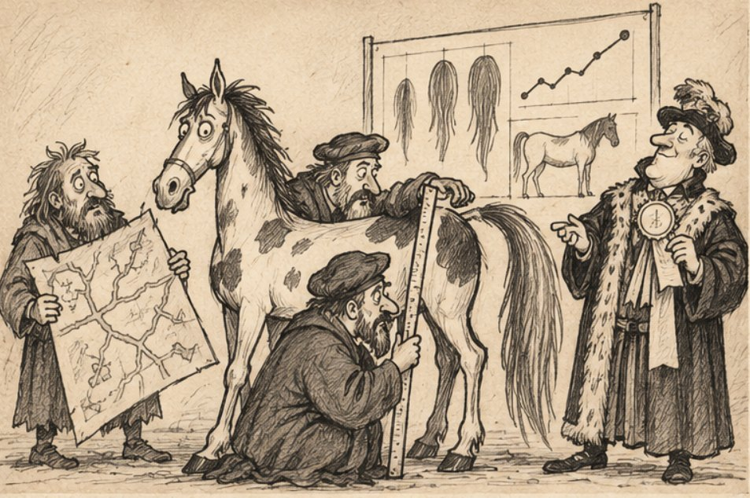
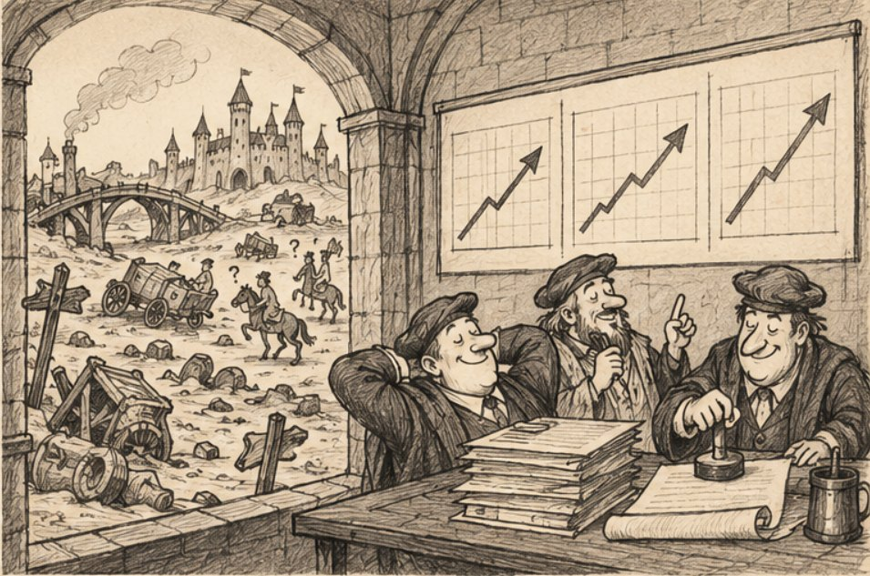
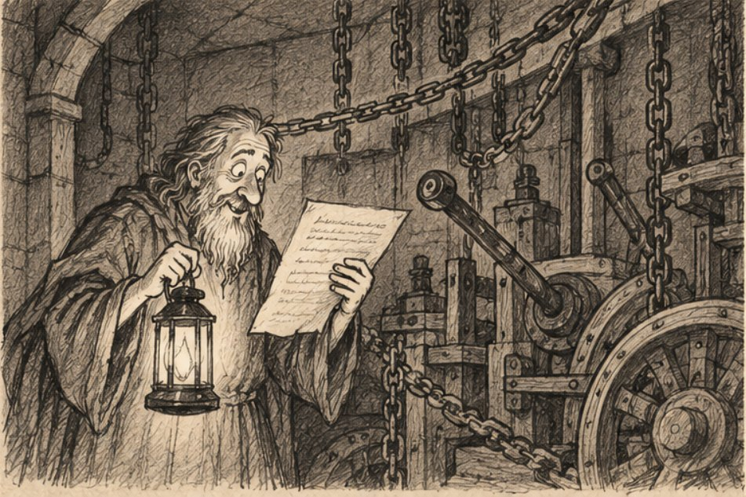
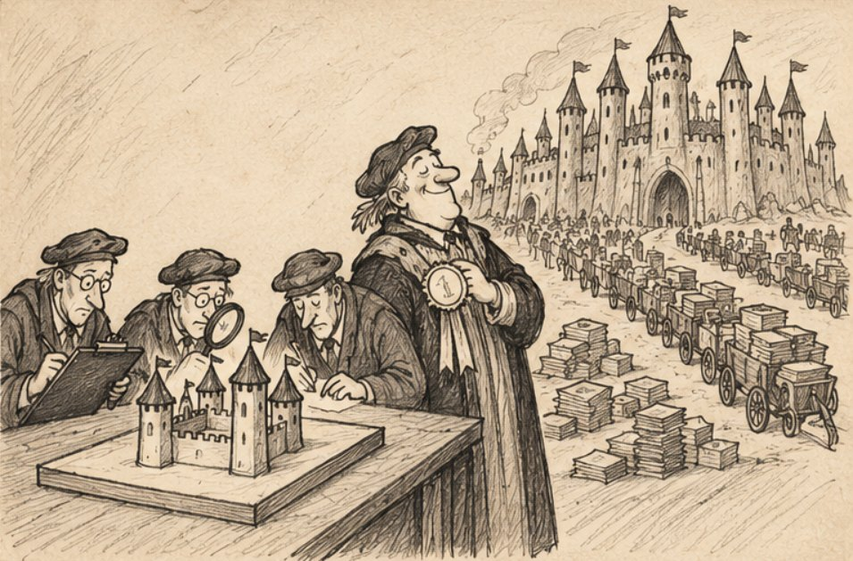

В те благословенные времена, когда королевство Юндексбург начало стремительно развиваться, государевы советники пришли к заключению, что прежних дорог для дальнейшего процветания уже недостаточно. Купцы жаловались на долгую доставку товаров, гонцы на необходимость объезжать половину континента ради одного письма, а казначейство утверждало, что без расширения международной торговли дальнейший рост экономики окажется под угрозой.
Последний аргумент произвёл на государя наибольшее впечатление, поскольку казначейство могло обосновать рост экономики даже в том случае, если бы все дороги королевства вели исключительно в одну сторону, желательно к казначейству. Для содействия процветанию на западной окраине владений, в Мамстердамском маркграфстве, построили новый замок, который должен был соединить Юндексбург с внешним миром.
На торжественном открытии руководитель проекта доложил государю о стопроцентном выполнении плана и продемонстрировал красивую диаграмму роста пропускной способности, получив премию за досрочный запуск. Ворота, как обычно, никто толком не проверял и туда по традиции проходили телеги только определенной ширины, но это было несущественно, и испытания перенесли на следующий финансовый квартал, поскольку в текущем квартале все ресурсы были направлены на достижение стратегических целей и выдачу премий.
Но в следующем квартале выяснилось, что на испытания не выделено бюджета, поскольку все средства уже распределили в предыдущем между другими приоритетными инициативами. Вопрос закрыли как несущественный, а оставшиеся сомнения внесли в реестр рисков, где они могли спокойно пылиться до следующего пересмотра бюджета.
Сам же замок передали эксплуатационной службе вместе с документацией, которая частично устарела, частично ссылалась на отсутствующие приложения, а в одном месте предписывала три раза звонить в колокол в случае непредвиденой ситуации, так в Юндексбурге называли преемственность процессов... где‑то в соседней деревне был выстроен новый дом для мастера Годфрида.
В основе дорожного хозяйства Юндексбурга лежал единый реестр, благодаря которому каждый замок знал, куда направлять гонцов и где искать нужные дороги. Реестр тот работал давно и исправно, но имел один небольшой недостаток, недостатком он считался иcключительно по отчетам, поскольку приносил мизер измеримого дохода, отчего казначейство регулярно впадало в истерику и предлагало сократить расходы на его содержание.
Причитания королевских казначеев наконец были услышаны и штат картографов уменьшили на четверть, остальным наказали писать больше отчётов, чтобы повысить производительность. Картографы попытались объяснить, что обслуживать больше дорог меньшим количеством людей будет сложнее, однако им заметили, что они мыслят категориями затрат, а не возможностей и еще раз повысили KPI.
В качестве показателя успеха выбрали количество поставленных и переписаных дорожных указаний, поэтому за квартал количество обработанных указаний выросло на сорок семь процентов. Количество дорог осталось прежним, но в отчёте об этом не упоминалось, ибо было несущественным отклонением, на которое, как мы знаем внимания не обращают.
Вскоре стало понятно, что разные замки используют несколько отличающиеся правила составления карт, и для решения проблемы создали особую дворовую службу по унификации. Поскольку непосредственное изучение дорожной сети требовало слишком много времени, а отправлять картографов в отдалённые маркграфства было дорого, служба решила воспользоваться косвенными показателями и после продолжительных исследований выяснилось, что чем длиннее у пегого коня хвост, тем большее расстояние он способен пробежать, а значит, тем реже гонцу требуется останавливаться для отдыха и уточнения дороги.

Методика была признана научно обоснованной, поскольку в ходе испытаний кони с самыми длинными хвостами действительно преодолели наибольшее расстояние, хотя никто не обратил внимания на то, что гонцов с короткохвостыми конями часто отправляли по старым разбитым дорогам. На основании полученных результатов служба разработала единый стандарт расстановки указателей, привязав расстояние между ними к средней длине хвоста пегого коня, а для контроля исполнения велела ежемесячно измерять хвосты во всех королевских конюшнях.
Когда один из картографов робко поинтересовался, как именно длина хвоста влияет на правильность дорожных карт, ему объяснили, что он мыслит устаревшими категориями и не понимает междисциплинарного подхода. В следующем квартале средняя длина хвостов выросла на восемнадцать процентов, производительность службы достигла исторического максимума, что свидетельствовало о стабильности внедрённой методики и необходимости продолжить её развитие. Поскольку в каждой комиссии по оценке длины хвостов у коней, должен был присутствовать казначей, то методика быстро получила нужные одобрения и рекомендована к выполнению.
Устав получили все замки, кроме тех, куда гонцы не смогли добраться из‑за отсутствия актуальных карт, но тем не менее, все замки отчитались об успешном внедрении устава. Пропущенные замки отсутствовали в старом реестре, поэтому официально их не существовало, а внести их в реестр без актуальных карт не представлялось возможным. Новая дворовая служба признала процесс унификации завершённым и выписала себе премии за отличную работу, государю о том докладывать не стали.
В конце лета смотритель Мамстердамского замка получил очередные сведения о дорогах внешнего мира и, как того требовала инструкция, передал их в королевство. Из‑за ошибки в конюшне замка гонцы отправлялись вообще во все известные дороги внешнего мира, включая маршруты между иностранными городами, портами и деревнями, до которых ни один юндексбургский гонец не собирался добираться даже за очень хорошую плату.
В результате все королевские реестры получали примерно в тысячу раз больше указаний, чем обычно. Картографы честно принялись их обрабатывать, поскольку отказать доверенному источнику они не могли, а нарушать принцип единства дорожного хозяйства было нельзя.

Столы заполнились картами, шкафы переполнились свитками, а писцы начали тратить всё больше времени на поиски свободного места для новых записей. Чем медленнее работали картографы, тем больше накапливалось указаний, а чем больше их накапливалось, тем хуже справлялись картографы. Вскоре дорожные указатели от частого использования пришли в негодность, за ними остановились и королевская почта, и поиск документов и торговые службы. Королевство просто больше не знало, как пользоваться собственной инфраструктурой.
Государь решил созвать кризисный штаб, и отправил гонца за документами и оценкой потерь, на что начальник королевской почты сообщил, что не может доставлять письма, а казначей объяснил, что не может получать сведения о счетах. И еще с десяток маркграфов представили статус своей службы, но пользы от этого было немного, тогда мастера Годфрида Ольденского вызвали ко двору. Прибыв по старым бумажным картам, он первым делом отправился в Мамстердамский замок, и потребовал показать план строительства, но смотритель смог предъявить журнал действий, сертификат обучения и подписанное письмо короля о добросовестности исполнения служебных обязанностей.
Хоть эти документы и были в полном порядке, но понимания что случилось не случилось, тогда Годфрид попросил показать ему механизм передачи сведений. Механизм отыскали быстро, он по недоразумению соединялся цепями с несколькими воротами, уходил в стену и исчезал в подвале, куда давно никто не спускался. На входе в подвал висела табличка «Не трогать», а под ней мелким почерком было приписано:
«Разобрать после релиза. Если релиза не будет, не трогать. Если упадет просто перезапустить сервис и более не трогать. Бальтазар фон Костыль, младший мастер. Писано третьего дня от инита репозитория».
Годфрид перечитал надпись и почувствовал, что где‑то в этом замке есть человек, с которым они могли бы прекрасно сработаться. Бальтазар предусмотрел все варианты развития событий, не указал срок и оставил после себя достаточно информации, чтобы следующий инженер мог продолжить его работу, не имея ни малейшего представления о том, что именно требуется продолжать.
К сожалению, Бальтазар покинул королевство и, по слухам, занимался проектированием мельниц в далеком Кривенгарде на берегах Малой Невки. Но там найти его тоже не удалось, поскольку в документах он проходил то как Бальтазар фон Костыль, то как Быстрорук фон Фикс, а в одном старом распоряжении значился просто как «младший помощник отдела внедрения». Сам механизм тоже никто не понимал, а поскольку на цепях, которые уходили под пол и были привязаны к воротам висели таблички с надписью «Не трогать», то Годфрид велел пока оставить всё как есть. Он слишком хорошо знал, чем заканчиваются попытки убрать старый механизм, особенно если никто не может объяснить, зачем он нужен.

Разобравшись с причиной аварии, Годфрид распорядился остановить передачу лишних сведений, разделить дороги на независимые участки и восстанавливать работу постепенно. Королевские инженеры трудились всю ночь, вручную переписывая названия на указателях между замками, и к утру гонцы опять стали доставлять письма и документы, а купцы смогли продолжить торговлю. О том, что Годфрид спас королевство, в запросах не упоминалось, поскольку спасение королевства не входило в согласованные критерии оценки эффективности кризисного штаба.
Комиссия установила, что причиной происшествия стало сочетание неблагоприятных факторов и неправильно выбранная порода лошадей для оценки длины хвоста, что устроило всех, поскольку лошади были неприкосновенны и относились к компетенции всего королевства, а значит, никто не мог отвечать за происшествие целиком.
Смотритель продолжил работу, получив повышение за успешный запуск замка, а председатель комиссии стал советником по вопросам надёжности. По традиции прежде чем закрыть расследование, решили воспроизвести аварию на учебном дворе, где установили уменьшенную копию замка, пригласили трёх писцов, разложили карты и запустили передачу дорожных указаний. Но ничего не произошло и писцы успешно обработали все записи, указатели продолжили работать, а руководитель испытаний доложил, что повторить происшествие не удалось. В отчёте особо подчеркнули, что испытания проведены успешно и система продемонстрировала устойчивость к нагрузкам.
Младший картограф попытался обратить внимание комиссии, что трех писцов было недостаточно для проверки и надо использовать минимум четырех, но ему напомнили, что его задача заключается в покраске дорожных указателей, а не в оценке качества испытаний, и отправили на обучение по программе «Эффективная коммуникация в кросс‑функциональной среде».
Коллегию картографов тем временем объединили с Департаментом операционного совершенства и новая команда получила задачу обеспечить устойчивость инфраструктуры, повысить прозрачность процессов и развить культуру общей ответственности. Обязанности разделили между шестью подразделениями, назначили владельцев процессов и разработали матрицу взаимодействия.

Вскоре государевы советники решили построить ещё один замок, чтобы расширить международную торговлю еще раз, уже на восточном направлении. Помня проблемы с постройкой первого замка, в техническое задание включили защиту от чрезмерного количества дорожных указателей, и назначили следующий этап развития на следующий квартал, поскольку в текущем все ресурсы были направлены на достижение стратегических целей и премии.
В конце квартала Годфрид поинтересовался, стали ли гонцы доставлять больше писем, но ему объяснили, что доставка писем зависит от множества подразделений и потому не может служить справедливым показателем работы какого‑то одного из них. Услышав об этом, мастер Годфрид продал свои опционы, купил старую бумажную карту и отправился в соседнее королевство. Он уже знал, что в Юндексбурге всё работает согласно плану, все ответственные назначены, все риски учтены, а единственное, чего нельзя гарантировать, это среднюю длину хвоста новой породы лошадей.
Механизм в подвале Мамстердамского замка работал безупречно и разбирать его не решились, поскольку цепи уходили внутрь стен, а единственный человек, который знал, куда именно они ведут, занимался проектированием мельниц в Кривенгарде. На табличке всё ещё значилось «Разобрать после релиза», но какого именно, уточнений не было, и значит можно считать это несущественным, а несущественное, как вы помните...
Все статьи